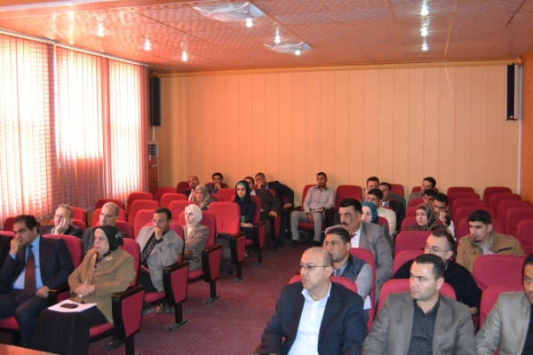

Welcome To Computer Science Department
TU-CS offers a wide range of programmes in a variety of fields, collaborating with reputable universities from around the world, particularly. TU-CS continuously strives for academic excellence aiming at becoming one of the leading institutions in the Middle East. Thus, the university constantly improves and upgrades its capacity in all areas: teaching methods, staff competence, academic processes and international collaborations
Computer Science is leading Department
It operates out of modern educational facilities located on its 50,000 square meters Erbil campus, 100 meter Street, Near Mosul Road, Nasr Roundabout. It is on a single campus which consists of newly – built, modern, fully equipped and spacious building for administration offices. Now, it witnesses a tremendous construction of spacious complex of buildings, which hosts academic departments, computer and language laboratories, library and student service facilities. The university is also building on its campus a complex for students' accommodation which will be ready for September 2015. Lebanese French University looks forward to achieving a high and well established position among the universities of Kurdistan Region , Iraq , and the whole globe in order to be one of the most important sources of education and scientific research . It aspires to be internationally recognized since it is keen on providing its students with the highest quality of knowledge in the fields of sciences and humanities.